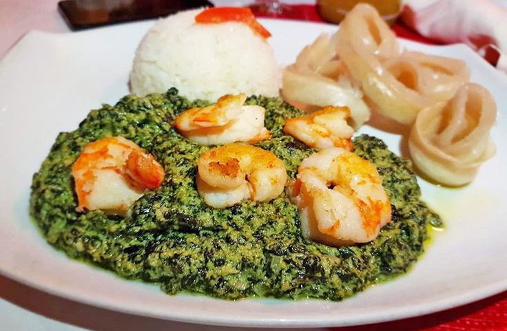
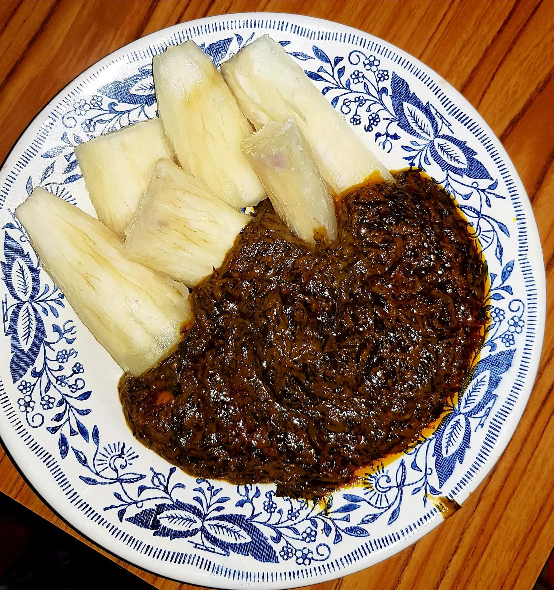
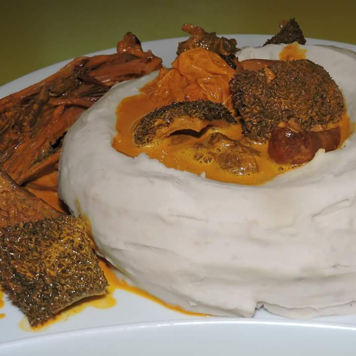

Voici notre classement des meilleurs plats camerounais !
1er au classement


Voici donc le fameux ndolè
2e
Le plat de ERU
3e

Le plat de d'okok
4e
Le plat de koki
5e

Le plat de taro-sauce jaune, le dernier mais il n'est pas pour autant à negliger !
par MORGANE CLAUDEL ANGO